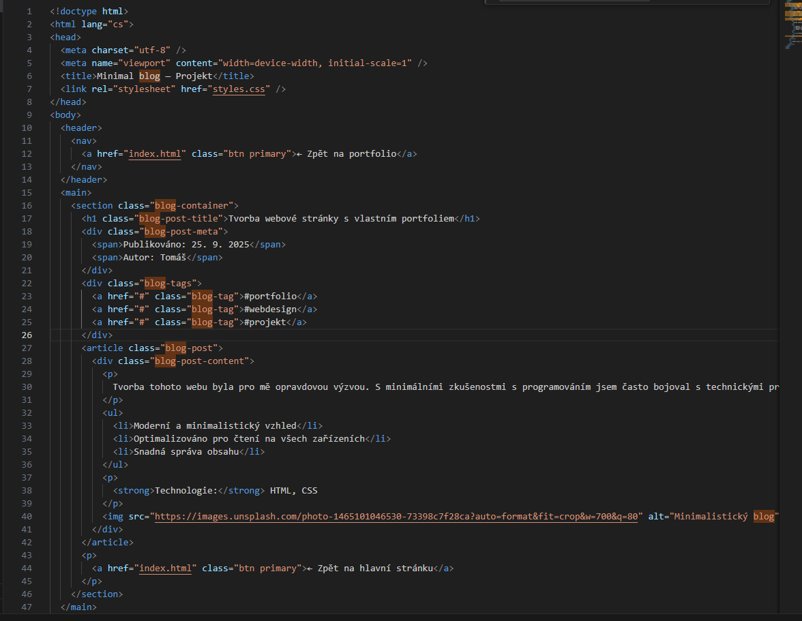

Tvorba tohoto webu byla pro mě opravdovou výzvou. S minimálními zkušenostmi s programováním jsem často bojoval s technickými problémy, hledal řešení na internetu a učil se za pochodu. Nejednou jsem narazil na slepé uličky, ale díky vytrvalosti a pomoci zkušenějších kamarádů se mi nakonec podařilo web dokončit. Celý proces mě naučil trpělivosti, hledání kompromisů a radosti z překonání překážek.
- Moderní a minimalistický vzhled
- Optimalizováno pro čtení na všech zařízeních
- Snadná správa obsahu
Technologie: HTML, CSS
